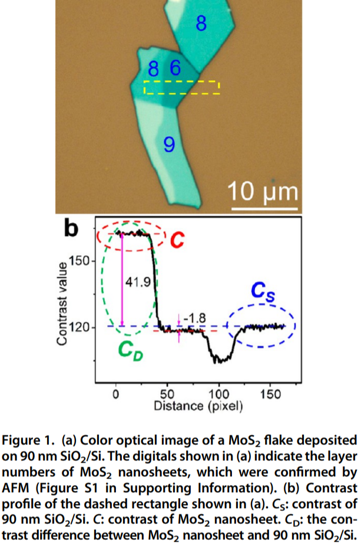
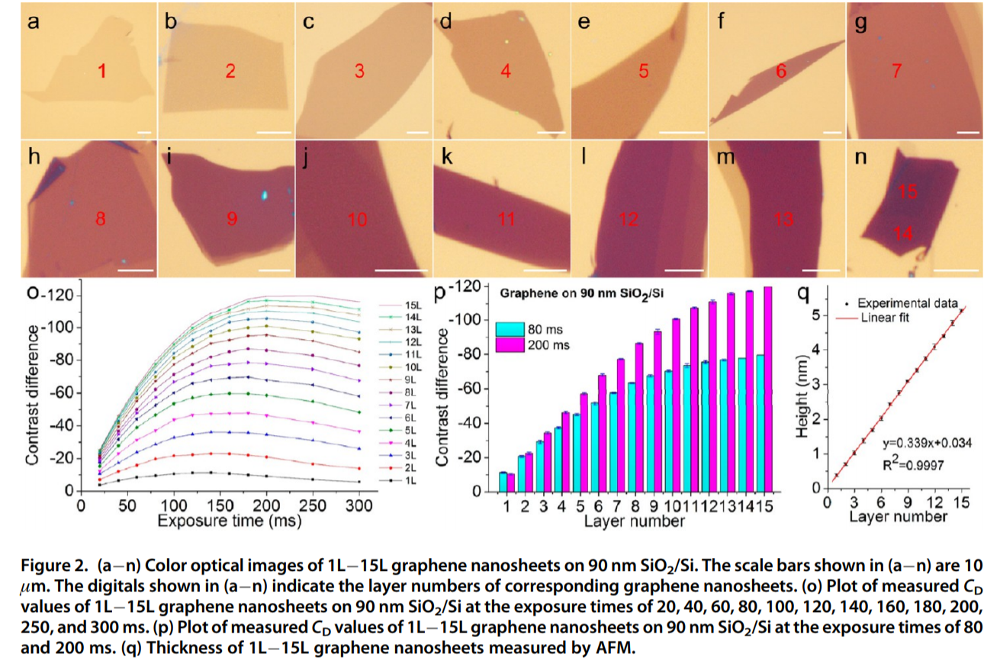
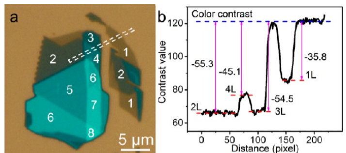
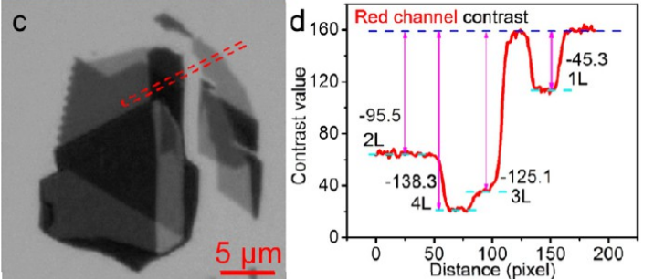
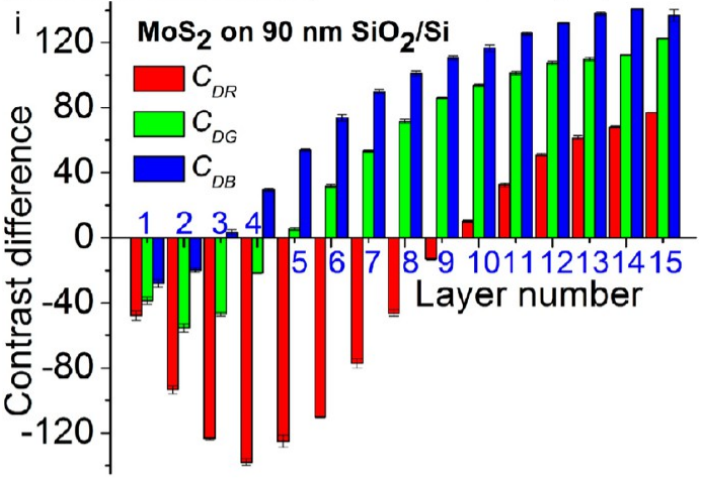
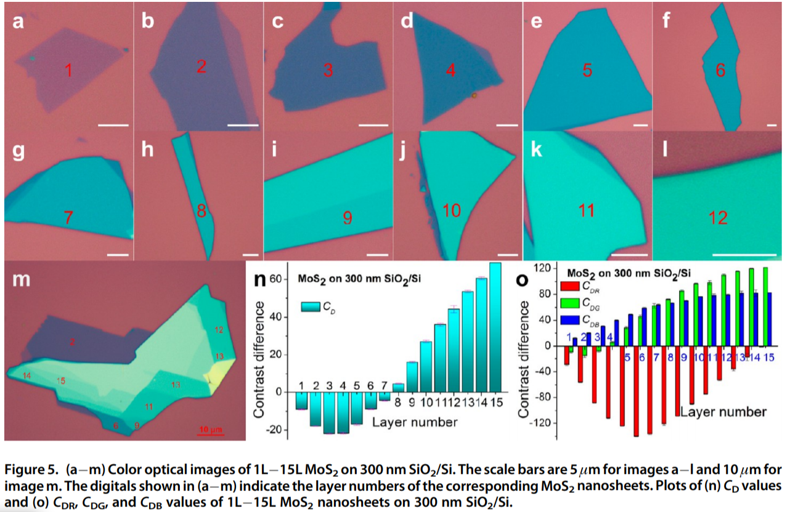

Outline
- Introduction
- Transition Metal Dichalcogenides (TMDCs)
- Transition Metal Dichalcogenides (TMDCs)
- Methods
- Experiment
- Results & Discussion
- Conclusion
- Q&A
Kuan-Chia Chiu (D06222003)
Physics Department @ NTU
TMDCs are thin semiconductors of the type MX\(_{2}\), with M as a transition metal atom (Mo, W, etc.) and X as a chalcogen atom (S, Se, or Te).
The optical contrast of a nanosheet (defined as C) and substrate (defined as C\(_{S}\)) was directly measured from its color optical image by using a free software (ImageJ)

| Layers | Contrast |
|---|---|
| 0 substracte | 120.4 |
| 6 layers | 118.6 |
| 8 layers | 162.3 |








